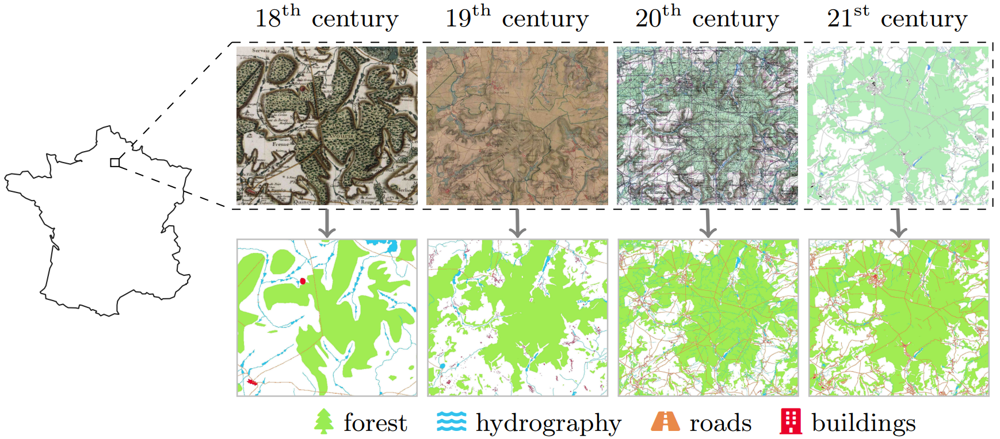
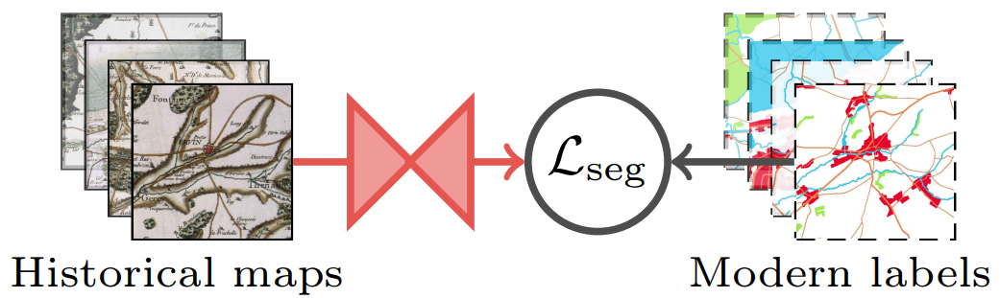
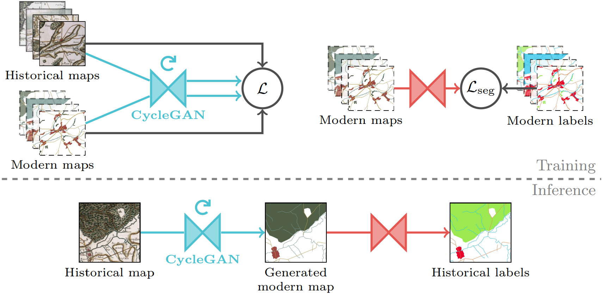
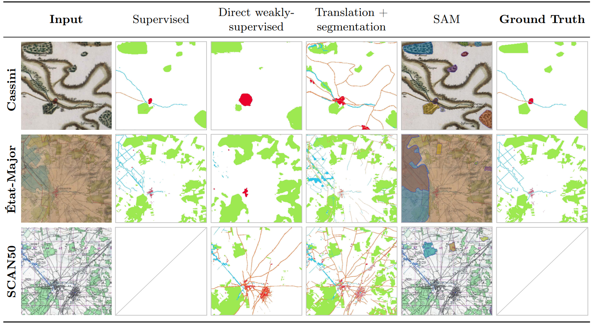
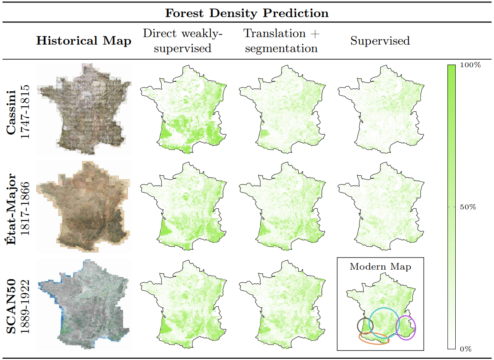

Abstract
Historical maps offer an invaluable perspective into territory evolution across past centuries—long before satellite or remote sensing technologies existed. Deep learning methods have shown promising results in segmenting historical maps, but publicly available datasets typically focus on a single map type or period, require extensive and costly annotations, and are not suited for nationwide, long-term analyses. In this paper, we introduce a new dataset of historical maps tailored for analyzing large-scale, long-term land use and land cover evolution with limited annotations. Spanning metropolitan France (548,305 km2), our dataset contains three map collections from the 18th, 19th, and 20th centuries. We provide both comprehensive modern labels and 22,878 km2 of manually annotated historical labels for the 18th and 19th century maps. Our dataset illustrates the complexity of the segmentation task, featuring stylistic inconsistencies, interpretive ambiguities, and significant landscape changes (e.g., marshlands disappearing in favor of forests). We assess the difficulty of these challenges by benchmarking three approaches: a fully-supervised model trained with historical labels, and two weakly-supervised models that rely only on modern annotations. The latter either use the modern labels directly or first perform image-to-image translation to address the stylistic gap between historical and contemporary maps. Finally, we discuss how these methods can support long-term environment monitoring, offering insights into centuries of landscape transformation.
Summary
- By segmenting historical maps, we can track changes in land cover over centuries.
- Historical map segmentation is hindered by the cost of manual annotation.
- Modern remote sensing technologies produce abundant present-day land cover labels.
- We release FRAx4, a new country-scale historical map segmentation dataset spanning four centuries, focused on weakly-supervised learning with present-day labels.
Historical map segmentation
Semantic segmentation consists in assigning a class label to each pixel of an image. In the case of historical map segmentation, classes are Land Use and Land Cover (LULC) categories: the type of physical material making up the Earth's surface at each location. By segmenting and comparing historical maps of the same region, we can track LULC evolution over centuries.
Dataset - FRAx4
- Metropolitan France (548,305 km2) from the 18th to the 21st centuries.
- Three historical map collections: Cassini, État-Major, SCAN50.
- Four LULC classes: forest, buildings, hydrography and roads.
- Comprehensive present-day labels plus partial historical labels.
Segmentation baselines
We introduce three historical map segmentation baselines: one fully-supervised and two-weakly supervised.
The weakly-supervised baselines use present-day LULC labels for training, as opposed to manually annotated ground truth labels for the historical maps.
Baseline A - Fully-supervised segmentation.

Baseline B - Direct weakly-supervised segmentation.
Baseline C - Translation + segmentation.
Results
Qualitative segmentation results
Long-term forest monitoring
As an application study, we use our baselines to predict forest cover density over France between the 18th and 21st centuries.
Oral presentation slides
BibTeX
@inproceedings{lopez2025segmenting,
title={Segmenting France Across Four Centuries},
author={L{\'o}pez-Rauhut, Marta and Zhou, Hongyu and Aubry, Mathieu and Landrieu, Loic},
booktitle={International Conference on Document Analysis and Recognition},
pages={3--22},
year={2025},
organization={Springer}
}Acknowledgments
This work was supported by the European Research Council (ERC project DISCOVER, number 101076028) and by ANR project sharp ANR-23-PEIA-0008 in the context of the PEPR IA. This work was also granted access to the HPC resources of IDRIS under the allocation 2024-AD011015314 made by GENCI.
We would like to thank Ségolène Albouy, Raphaël Baena, Sonat Baltacı, Syrine Kalleli and Yannis Siglidis for their constructive manuscript feedback, as well as Gül Varol and Alexei Efros for sharing valuable insights.